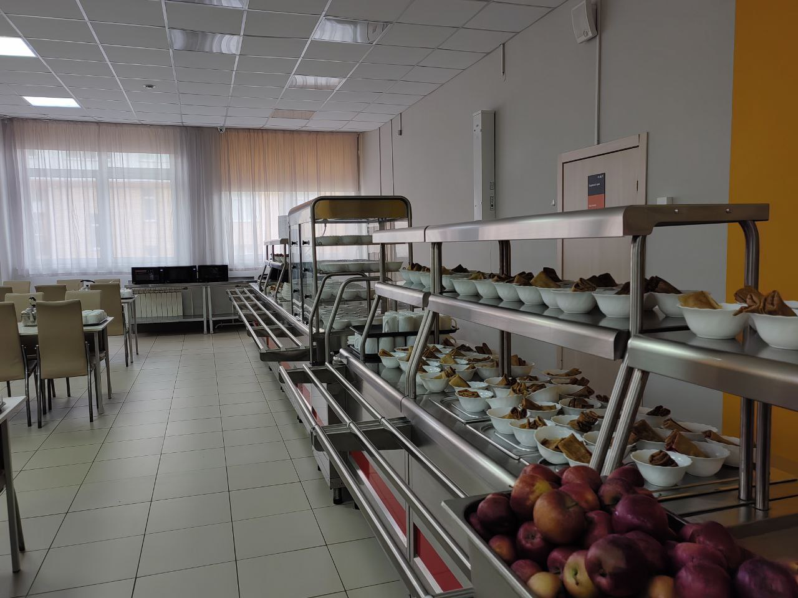
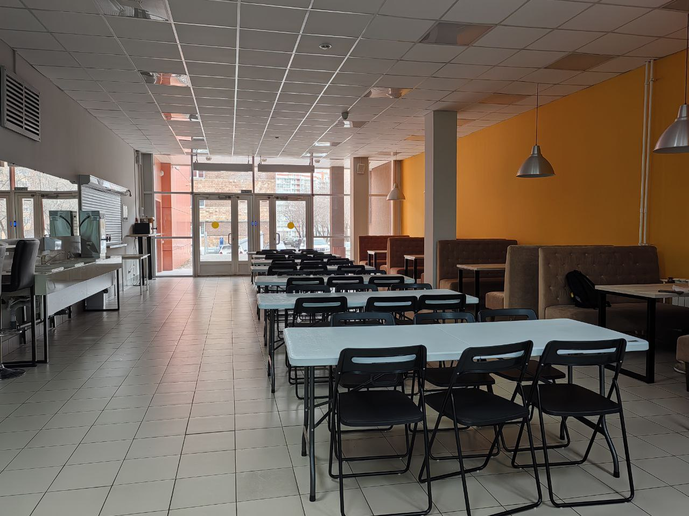

Столовая
По мнению учеников это самое важное помещение школы! Здесь 5 раз в день они получают удовольствие от невероятно питательных блюд.
Ученики ФМШ СФУ никогда не остаются голодными, ведь блюда здесь очень вкусные, а главное - полезные для организма и поддержания жизненных сил!
Столовая разделена на две зоны - обеденную и буфетную. При проведении в школе различных олимпиад (а они проходят у нас часто!) столовая снабжает едой не только учеников ФМШ СФУ, но и гостей школы. Для них в буфетной зоне накрывают столы и выдают те же самые блюда, что и учащимся школы.
